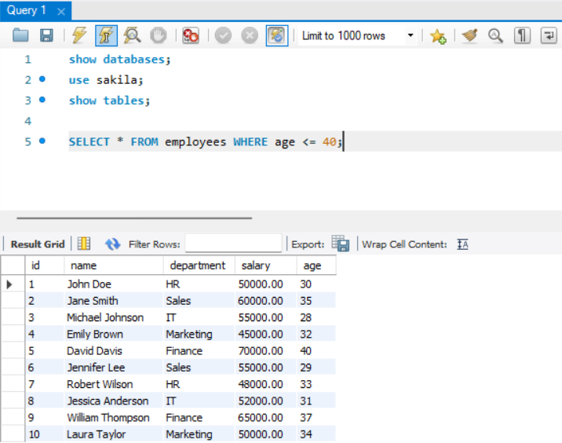
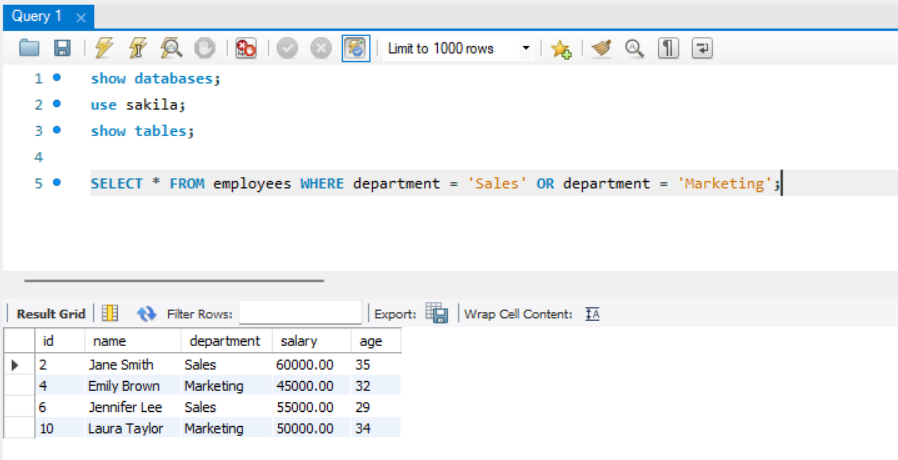
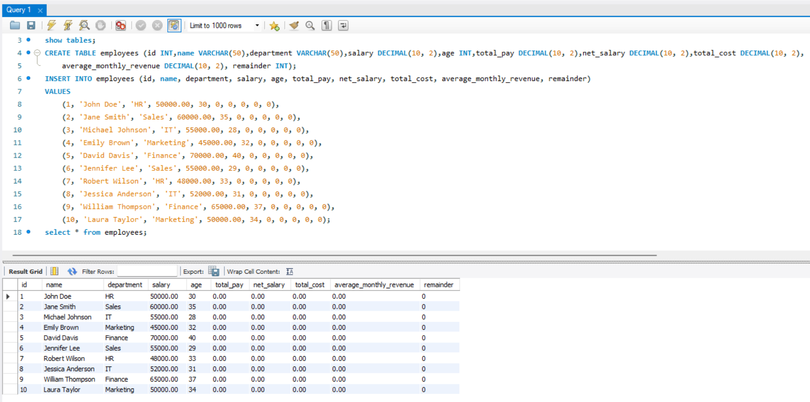
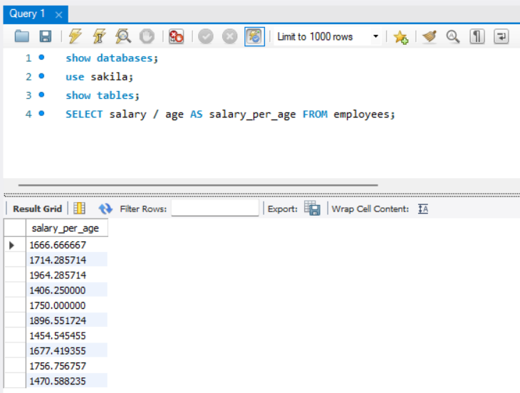
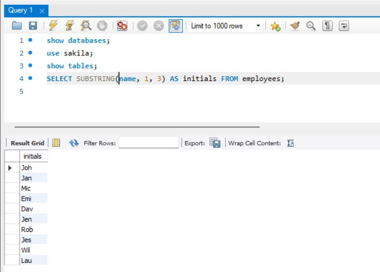
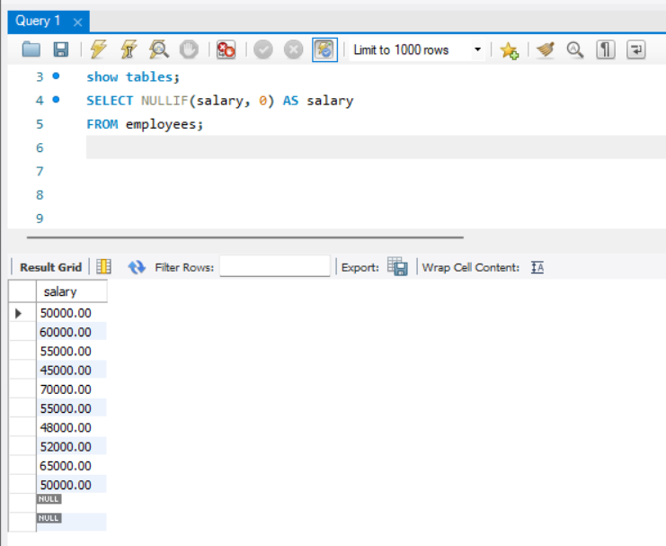
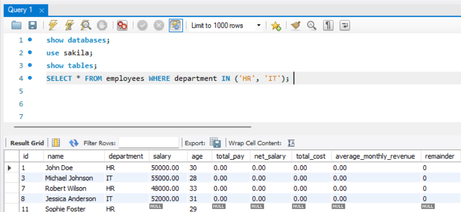
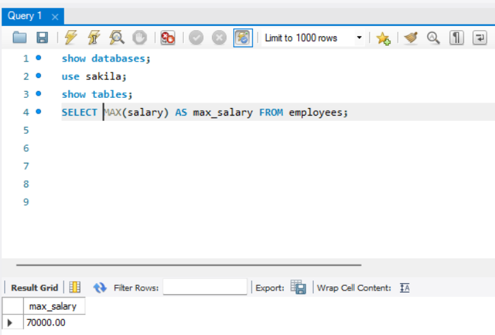

SQL Operators
Contents
SQL Operators¶
There are several types of operators in SQL that are used to perform different operations on data. Here are some common types of operators in SQL along with one example of each:
Comparison Operators:
Example:
SELECT * FROM employees WHERE age > 30;
Description: Comparison operators such as “>” (greater than), “<” (less than), “=” (equal to), “<>” (not equal to), etc., are used to compare values in a condition.
Logical Operators:
Example:
SELECT * FROM employees WHERE salary > 50000 AND department = 'Sales';
Description: Logical operators such as “AND”, “OR”, and “NOT” are used to combine multiple conditions in a query.
Arithmetic Operators:
Example:
SELECT salary * 1.1 AS increased_salary FROM employees;
Description: Arithmetic operators such as “+”, “-“, “*”, and “/” are used to perform mathematical calculations on numeric values in a query.
String Operators:
Example:
SELECT CONCAT(full_name,' ',last_name) AS full_name FROM employees;
Description: This function used to manipulate and combine strings in a query.
Null-Related Operators:
Example:
SELECT * FROM employees WHERE department IS NULL;
Description: Null-related operators such as “IS NULL” and “IS NOT NULL” are used to check for null values in a query.
Inclusion Operators:
Example:
SELECT * FROM employees WHERE department IN ('Sales', 'Marketing');
Description: Inclusion operators are used to check if a value exists in a set or a range. These are the operators: “IN”, “BETWEEN”, “LIKE”.
These operators are essential in constructing queries to perform various operations, such as filtering rows, comparing values, combining conditions, performing calculations, and manipulating strings in SQL.
Let’s look at them individually and in detail.
We will be using the following table for this chapter: -

COMPARISON OPERATORS¶
Certainly! Here are the comparison operators in SQL along with examples of each:
1. Equal to (=) operator:¶
Description: The equal to operator checks if two values are equal.
Example:
SELECT * FROM employees WHERE department = 'Sales';
2. Not equal to (<>) operator:¶
Description: The not equal to operator checks if two values are not equal.
Example:
SELECT * FROM employees WHERE department <> 'HR';
3. Greater than (>) operator:¶
Description: The greater than operator checks if one value is greater than another.
Example:
SELECT * FROM employees WHERE salary > 50000;
```
### 4. Less than (<) operator:
- Description: The less than operator checks if one value is less than another.
- Example:
``` sql
SELECT * FROM employees WHERE age < 30;
```
### 5. Greater than or equal to (>=) operator:
- Description: The greater than or equal to operator checks if one value is greater than or equal to another.
- Example:
``` sql
SELECT * FROM employees WHERE salary >= 50000;
6. Less than or equal to (<=) operator:¶
Description: The less than or equal to operator checks if one value is less than or equal to another.
Example:
SELECT * FROM employees WHERE age <= 40;
```
### 7. IS NULL operator:
- Description: The IS NULL operator checks if a value is NULL (missing or unknown).
- Example:
``` sql
SELECT * FROM employees WHERE department IS NULL;
```
### 8. IS NOT NULL operator:
- Description: The IS NOT NULL operator checks if a value is not NULL.
- Example:
```sql
SELECT * FROM employees WHERE department IS NOT NULL;
```
These comparison operators are essential for performing comparisons in SQL queries. They allow you to define conditions that evaluate and filter data based on the relationships between values in the database.

Logical Operators¶
In SQL, logical operators are used to combine multiple conditions in a query to perform logical operations. Here are the commonly used logical operators in SQL:
1. AND:¶
Description: The AND operator returns true if all the conditions separated by AND are true.
Example:
SELECT * FROM employees WHERE department = 'Sales' AND salary > 50000;
```
### 2. `OR`:
- Description: The OR operator returns true if any of the conditions separated by OR is true.
- Example:
```sql
SELECT * FROM employees WHERE department = 'Sales' OR department = 'Marketing';
```
### 3. `NOT`:
- Description: The NOT operator negates the condition that follows it, returning true if the condition is false.
- Example:
``` sql
SELECT * FROM employees WHERE NOT department = 'HR';
These logical operators allow you to combine conditions to create more complex and flexible queries. They are useful for filtering data based on multiple criteria and performing logical comparisons in SQL queries.


Arithmetic Operators¶
Arithmetic operators in SQL are used to perform mathematical operations on the values stored in columns or to combine values together. Let’s explain the arithmetic operators using the employees table:
Assuming we have the employees table created and populated with the provided data, here are some examples of arithmetic operations using the table’s columns:
1. Addition (+):¶
SELECT salary + 1000 AS increased_salary
FROM employees;
This query adds 1000 to the salary column for each employee and returns the result as increased_salary.
2. Subtraction (-):¶
SELECT salary - 5000 AS decreased_salary
FROM employees;
This query subtracts 5000 from the salary column for each employee and returns the result as decreased_salary.
3. Multiplication (*):¶
SELECT salary * 0.1 AS bonus_amount
FROM employees;
This query multiplies the salary column by 0.1 (10%) for each employee and returns the result as bonus_amount.
4. Division (/):¶
SELECT salary / age AS salary_per_age
FROM employees;
This query divides the salary column by the age column for each employee and returns the result as salary_per_age.
5. Modulo (%):¶
SELECT age % 10 AS remainder
FROM employees;
This query calculates the remainder of dividing the age column by 10 for each employee and returns the result as remainder.
These are just a few examples of how arithmetic operators can be used in SQL queries. You can combine arithmetic operators with other SQL clauses and functions to perform complex calculations and derive meaningful insights from the data in the employees table.

String Operators¶
String operators in SQL are used to perform operations on string values. Let’s use the employees table to provide examples of string operators:
Assuming we have the employees table created and populated with the provided data, here are some examples of string operations using the table’s columns:
1. Concatenation:¶
SELECT CONCAT(name,',',department) AS employee_info
FROM employees;
This query concatenates the name column, a comma, and the department column for each employee, resulting in the combined string as employee_info.
2. Length (LENGTH):¶
SELECT name, LENGTH(name) AS name_length
FROM employees;
This query retrieves the name column and calculates the length of each name using the LENGTH function, returning the result as name_length.
3. Upper case (UPPER):¶
SELECT name, UPPER(name) AS uppercase_name
FROM employees;
This query retrieves the name column and converts each name to uppercase using the UPPER function, returning the result as uppercase_name.
4. Lower case (LOWER):¶
SELECT name, LOWER(name) AS lowercase_name
FROM employees;
This query retrieves the name column and converts each name to lowercase using the LOWER function, returning the result as lowercase_name.
5. Substring (SUBSTRING or SUBSTR):¶
The substring function is used to extract a portion of a string based on a specified starting position and length. Example:
SELECT SUBSTRING(name, 1, 3) AS initials
FROM employees;
This query retrieves the first three characters from the name column for each employee, returning the result as initials.
These are some of the string operators commonly used in SQL. They can be combined with other SQL clauses and functions to manipulate and analyze string data effectively.
These are just a few examples of how string operators can be used in SQL queries. You can combine string operators with other SQL clauses and functions to manipulate and transform string values based on your requirements.

In SQL, there are specific operators and functions used to handle NULL values. Here are some commonly used NULL-related operators in SQL:
1. IS NULL:¶
The IS NULL operator is used to check if a value is NULL. Example:
SELECT *
FROM employees
WHERE department IS NULL;
This query retrieves all rows from the employees table where the department column contains NULL values.
2. IS NOT NULL:¶
The IS NOT NULL operator is used to check if a value is not NULL. Example:
SELECT *
FROM employees
WHERE department IS NOT NULL;
This query retrieves all rows from the employees table where the department column does not contain NULL values.
3. COALESCE:¶
The COALESCE function is used to return the first non-NULL value in a list of expressions. Example:
SELECT COALESCE(department, 'Unknown') AS department
FROM employees;
This query retrieves the department column from the employees table. If the value is NULL, it is replaced with the string ‘Unknown’ using the COALESCE function.
4. NULLIF:¶
The NULLIF function is used to compare two expressions and return NULL if they are equal. Example:
SELECT NULLIF(salary, 0) AS salary
FROM employees;
This query retrieves the salary column from the employees table. If the value is 0, it is replaced with NULL using the NULLIF function.
These NULL-related operators and functions provide ways to handle and manipulate NULL values in SQL queries, allowing you to filter, replace, or compare NULL values as needed.

Inclusion Operators¶
In SQL, there are several inclusion operators that allow you to check if a value is included in a specific set of values or a range. Here are some commonly used inclusion operators in SQL:
1.IN:¶
The IN operator is used to check if a value is included in a list of values. Example:
SELECT *
FROM employees
WHERE department IN ('HR', 'IT');
This query retrieves all rows from the employees table where the department column is either ‘HR’ or ‘IT’.
2. NOT IN:¶
The NOT IN operator is used to check if a value is not included in a list of values. Example:
SELECT *
FROM employees
WHERE department NOT IN ('Sales', 'Marketing');
This query retrieves all rows from the employees table where the department column is neither ‘Sales’ nor ‘Marketing’.
3. BETWEEN:¶
The BETWEEN operator is used to check if a value is within a specified range (inclusive). Example:
SELECT *
FROM employees
WHERE age BETWEEN 30 AND 35;
This query retrieves all rows from the employees table where the age column is between 30 and 35.
4. NOT BETWEEN:¶
The NOT BETWEEN operator is used to check if a value is not within a specified range. Example:
SELECT *
FROM employees
WHERE age NOT BETWEEN 30 AND 35;
This query retrieves all rows from the employees table where the age column is not between 30 and 35.
These inclusion operators provide flexibility in querying data based on whether values are included in a set or range. You can use them to filter and retrieve specific rows from the table based on your criteria.

AGGREGATE FUNCTIONS IN SQL¶
Aggregate functions in SQL are used to perform calculations on a set of values and return a single result. These functions operate on a group of rows specified by the GROUP BY clause or on the entire result set if no GROUP BY clause is used. Here are some commonly used aggregate functions in SQL:
1. COUNT: Returns the number of rows in a group or result set.¶
Example:
SELECT COUNT(*) AS total_employees
FROM employees;
2. SUM: Calculates the sum of a numeric column in a group or result set.¶
Example:
SELECT SUM(salary) AS total_salary
FROM employees;
3. AVG: Computes the average value of a numeric column in a group or result set.¶
Example:
SELECT AVG(age) AS average_age
FROM employees;
4. MAX: Returns the maximum value of a column in a group or result set.¶
Example:
SELECT MAX(salary) AS max_salary
FROM employees;
5. MIN: Retrieves the minimum value of a column in a group or result set.¶
Example:
SELECT MIN(age) AS min_age
FROM employees;
These are just a few examples of aggregate functions in SQL. There are other aggregate functions available, such as SUM, COUNT, AVG, MAX, and MIN, which can be used to perform various calculations on data sets. Aggregate functions are helpful for summarizing data and deriving insights from large datasets.

Exercise¶
Theory Questions:¶
What is the purpose of the “IS NULL” operator in SQL? Provide an example query using this operator.
Explain the difference between the “=” operator and the “<>” operator in SQL with examples.
What is the role of logical operators in SQL queries? Provide a scenario where you would use the “AND” operator.
Explain the difference between the “AND” and “OR” operators in SQL. Provide an example query using both operators.
In what situations would you use parentheses to group conditions when using logical operators?
Describe the “MODULO” operator and provide an example query that uses it.
What are string operators in SQL, and how are they used? Provide an example query that uses the “||” concatenation operator.
How can you convert all characters in a string column to uppercase using a string operator? Provide an example query.
In what situations would you use the “SUBSTRING” function, and how does it work? Provide an example query.
How do null-related operators in SQL help in handling NULL values? Provide an example query that uses the “IS NOT NULL” operator.
Explain the concept of using the “COALESCE” function to handle NULL values in a query. Provide an example query using this function.
What is the purpose of inclusion operators in SQL? Provide an example query that uses the “IN” operator.
Explain the difference between the “BETWEEN” operator and the “IN” operator in terms of usage and scenarios.
How do aggregate functions differ from analytic functions in SQL? Provide examples of scenarios where you would use each type of function.
Table for questions:
CREATE TABLE Products (
id INT AUTO_INCREMENT PRIMARY KEY,
name VARCHAR(255),
price DECIMAL(10, 2),
quantity INT,
category VARCHAR(255),
added_on DATE
);
INSERT INTO Products (name, price, quantity, category, added_on)
VALUES
('Smartphone', 299.99, 150, 'Electronics', '2023-03-15'),
('Laptop', 799.99, 80, 'Electronics', '2022-12-01'),
('Bluetooth Speaker', 149.99, 200, 'Electronics', '2023-01-25'),
('Organic Apples', 4.99, 300, 'Food', '2023-02-10'),
('Chocolate Bar', 1.99, 500, 'Food', '2023-03-01'),
('LED Monitor', 129.99, 120, 'Electronics', '2023-03-20'),
('Gaming Mouse', 59.99, 90, 'Electronics', '2023-02-18'),
('Water Bottle', 19.99, 60, 'Sports', '2023-03-05'),
('Sports Shoes', 99.99, 40, 'Sports', '2022-11-15'),
('Backpack', 49.99, 150, 'Accessories', '2023-03-22'),
('Earbuds', 89.99, 110, 'Electronics', '2023-01-05'),
('Portable Charger', 39.99, 180, 'Electronics', '2023-03-12'),
('VR Headset', 299.99, 30, 'Electronics', '2023-02-28');
Coding Questions:¶
Q. Find all products.
Q. List the names of all products.
Q. Find products with a price greater than 100.
Q. Count the total number of products.
Q. Find products in the ‘Electronics’ category.
Q. List the name and price of each product.
Q. Find products added after January 1, 2023.
Q. Find products with quantity less than 50.
Q. List all product categories.
Q. Find the name of products with ‘Gadget’ in their name.
Q. Find products with a price between 50 and 150.
Q. List products with a quantity greater than 100, sorted by quantity.
Q. Find the average price of products.
Q. List the top 5 most expensive products.
Q. Find the total quantity of products in the ‘Food’ category.
Q. List products with prices increased by 10%.
Q. Find products added in the last 30 days.
Q. List the names of products with more than 100 characters in their name.
Q. Find the minimum and maximum price in category.
Q. Calculate the total quantity of products whose names start with a vowel.
Q. Find products that do not fall within the price range of \(10 to \)300.
Q. List all products that do not have ‘Sports’ in their category and have a price over $100.
Q. Find the difference between the highest and lowest prices of the products.
Q. Display the name and a 15% increased price for each product.